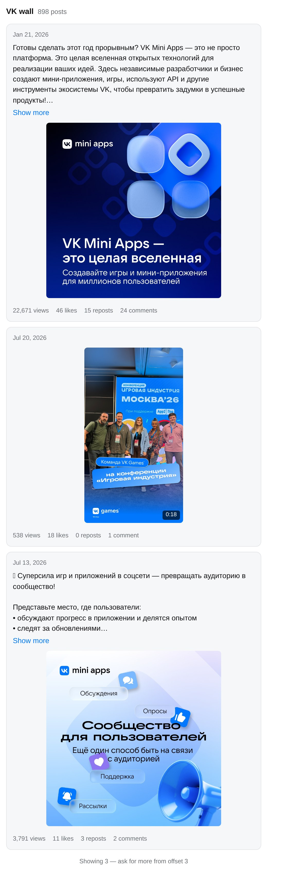

ВКонтакте для Claude и других ИИ-ассистентов
VK MCP Server подключает ваше сообщество ВКонтакте к ИИ-ассистенту. Он разбирает входящие сообщения и предлагает ответы, публикует посты и истории, читает стены и сообщества. Бесплатно, открытый код, работает у вас на компьютере.
Подключить за две минуты Исходный код на GitHub

Что умеет
В клиентах, которые поддерживают MCP Apps (Claude, Claude Desktop, VS Code Copilot, Goose), стены, сообщества и профили показываются карточками, а не текстом. Всё, что меняет что-то во ВКонтакте, помечено как запись — клиент спросит разрешение, прежде чем опубликовать или отправить.
Как подключить
1. Получите токены
Токен сообщества — в сообществе, которым вы управляете: Управление → Работа с API → Ключи доступа →
Создать ключ. Отметьте права wall, photos, stories, messages,
manage. Раздел есть только в полной веб-версии сайта. Токен не протухает и не привязан к браузеру.
Сервисный ключ — на странице настроек вашего приложения ВКонтакте. Он нужен, чтобы ассистент читал стены: токену сообщества ВКонтакте чтение стены не даёт. Почему так и что умеет каждый токен.
2. Подключите к ассистенту
Claude Desktop — в один клик. Скачайте файл .mcpb со
страницы релизов и откройте его. Claude Desktop
установит сервер и попросит токены в форме. Ничего ставить отдельно не нужно.
Claude Code, Cursor, VS Code, Windsurf, Cline — добавьте в настройки MCP (нужен Node.js 20 или новее):
{
"mcpServers": {
"vk": {
"command": "npx",
"args": ["-y", "vk-mcp-server"],
"env": {
"VK_ACCESS_TOKEN": "vk1.a...токен сообщества",
"VK_SERVICE_KEY": "...сервисный ключ"
}
}
}
}Проверить, что умеют ваши токены, можно ещё до первого запроса:
VK_ACCESS_TOKEN=... VK_SERVICE_KEY=... npx vk-mcp-server --checkВопросы
Это бесплатно?
Да. Открытый код под лицензией MIT. Сервер работает у вас на компьютере, токены никуда, кроме API ВКонтакте, не уходят.
Работает ли с ChatGPT?
Пока нет: ChatGPT подключает только удалённые MCP-серверы, а этот работает локально. Подходят Claude Desktop, Claude Code, Cursor, VS Code, Windsurf, Cline, Goose и другие клиенты с поддержкой локальных MCP-серверов.
Можно ли публиковать посты с фото?
От имени сообщества — нет, и это ограничение ВКонтакте, а не сервера. Мы проверили все способы: загрузку фото на стену токену сообщества ВКонтакте не даёт. Подробности — на странице про токены.
Можно ли редактировать и удалять посты, смотреть статистику?
Для этого ВКонтакте требует полный пользовательский токен, а новым приложениям его больше не выдаёт. Если у вас такой токен остался — инструменты для этого в сервере есть.
Что такое MCP?
Model Context Protocol — открытый стандарт, по которому ИИ-ассистенты подключают внешние инструменты. Один сервер работает со всеми клиентами, которые его поддерживают.